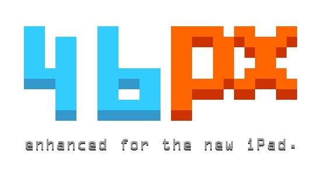

<div style="width:500px; padding:100px; margin:auto;">


<div style="text-align:center; padding:20px;">
The fun begins April 20th.
<p>
	<a href="https://twitter.com/intent/tweet?screen_name=46px" class="twitter-mention-button" data-size="large" data-related="46px">Tweet to @46px</a>
	<script>!function(d,s,id){var js,fjs=d.getElementsByTagName(s)[0];if(!d.getElementById(id)){js=d.createElement(s);js.id=id;js.src="//platform.twitter.com/widgets.js";fjs.parentNode.insertBefore(js,fjs);}}(document,"script","twitter-wjs");</script>
</div>

<script charset="utf-8" src="http://widgets.twimg.com/j/2/widget.js"></script>
<script>
new TWTR.Widget({
  version: 2,
  type: 'profile',
  rpp: 6,
  interval: 30000,
  width: 500,
  height: 400,
  theme: {
    shell: {
      background: '#333333',
      color: '#ffffff'
    },
    tweets: {
      background: '#000000',
      color: '#ffffff',
      links: '#4aed05'
    }
  },
  features: {
    scrollbar: true,
    loop: false,
    live: true,
    behavior: 'all'
  }
}).render().setUser('46px').start();
</script>

</div>